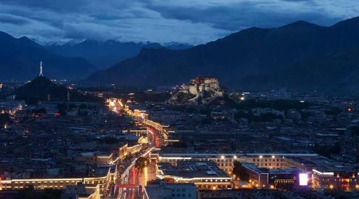
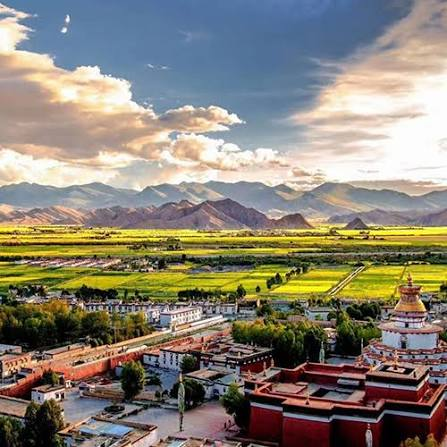

Tibet (西藏) adalah wilayah di Asia, mencakup sebagian besar Dataran Tinggi Tibet dan membentang seluas 2.500.000 km2 (970.000 sq mi). Wilayah ini merupakan tanah air bagi orang Tibet. Selain itu dataran tinggi tersebut juga dihuni oleh beberapa kelompok etnik lainnya, seperti Monpa, Tamang, Qiang, Sherpa dan Lhoba dan sejak abad ke-20, terdapat jumlah pemukim Han Tiongkok dan Hui yang cukup besar. Sejak aneksasi Tibet oleh Republik Rakyat Tiongkok pada 1951, seluruh dataran tinggi berada di bawah administrasi Republik Rakyat Tiongkok. Secara administratif, Tibet terbagi menjadi Daerah Otonom Tibet, dan bagian dari provinsi Qinghai dan Sichuan. Secara konstitusional, Tibet juga diklaim oleh Republik Tiongkok (Taiwan) sebagai Wilayah Tibet sejak 1912.